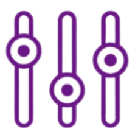

IONELA LEFTER
Software Technology Engineering Student
Email:
Phone:
+4536664352
Address:
Kollegievænget 5, B305, 8700 Horsens
Portfolio:
- What I did
- What I learned
- My role there
- other stuff ...
- What I did
- What I learned
- My role there
- other stuff ...
EDUCATION
VIA University College, University | Not graduated yet
Volunteer Work: American Spaces Moldova


SKILLS
Software:
- Programming Languages (Java, Python),
Certiport IT Specialist - Python certification
- Web (HTML)
- Databases (MySQL), Certiport IT Specialist - Databases certification
- Software & IDEs : VS Code, IntelliJ, GitHub
- Networking, Certiport IT Specialist - Networking certification
- Web (HTML)
- Databases (MySQL), Certiport IT Specialist - Databases certification
- Software & IDEs : VS Code, IntelliJ, GitHub
- Networking, Certiport IT Specialist - Networking certification
Language 1:
English, level C1
Language 2:
Romanian, native language
Language 3:
Russian, level C1
Technical:
- Programming (Data Structures & Algorithms)
- Databases (Relational Database Design, SQL)
- Networking and Protocols (TCP/IP, HTTP/HTTPS)
- Databases (Relational Database Design, SQL)
- Networking and Protocols (TCP/IP, HTTP/HTTPS)
PROJECTS
Link to my portfolio